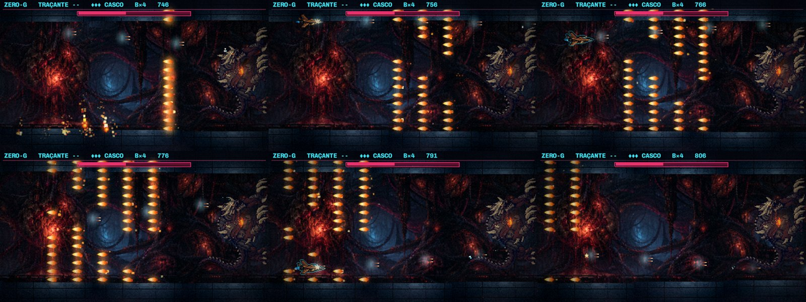
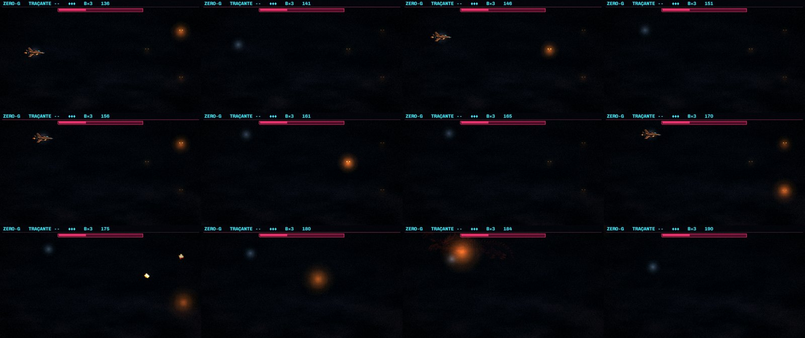
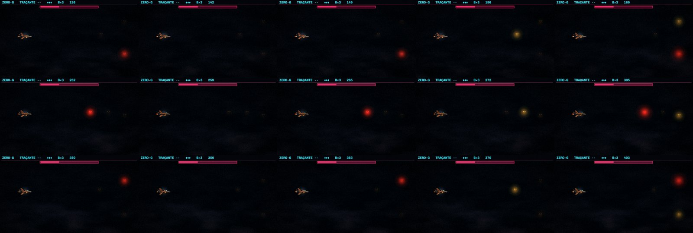
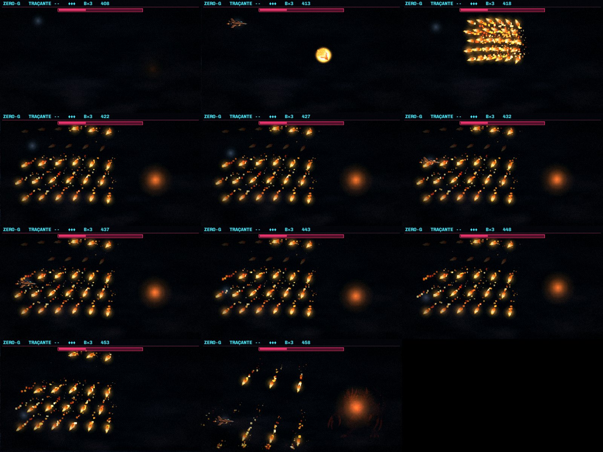
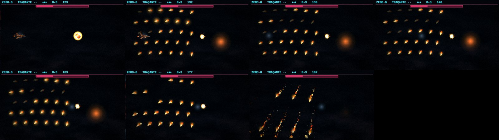
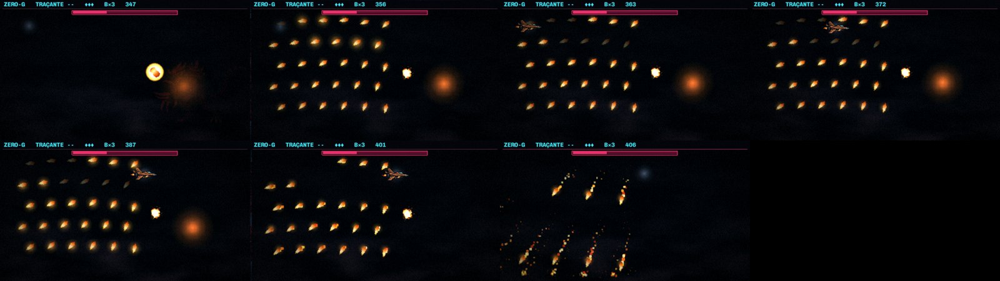

26/11. Tudo aqui saiu do jogo rodando: fotos em sequência, sons registrados enquanto ela luta, e um teste que joga como uma pessoa (com tempo de reação). As fotos estão no tamanho dele.
O registro dos sons em 90 s de fase 3 mostrou 122 impactos de lava e 113 estilhaços para só 5 arremessos. Cada salva virava uma cadeia de uns 5 s, até o pool de projéteis esvaziar.
A causa era um erro de reaproveitamento. A bola que cai solta o projétil dela, e o respingo pega esse mesmo projétil na hora. A ficha antiga ("bola") continuava apontando para ele, então cada gotinha que caía era tratada como bola de novo e respingava de novo. Isso também enchia o pool de 128 projéteis: numa das paredes, 61 já estavam ocupados quando ela lançou a laje, e a laje precisa de 52. Com mais respingos no ar, as últimas colunas da laje simplesmente não nasciam.
Corrigido: agora a ficha só vale enquanto o projétil carrega o número dela. Depois da correção, em 60 s houve 18 impactos e 14 estilhaços, um por bola que cai. O metal do campo do coração, que caía em 15 batidas cheias no mesmo segundo, agora toca uma batida macia a cada 120 ms.
Joguei três paredes seguidas, atirando e me mexendo. As três saíram inteiras, com as 52–53 lascas na tela (a 3ª abaixo).

Uma ressalva honesta: não consegui reproduzir os 80 % fora da tela. A causa mais provável é a do respingo infinito acima: a parede é o 3º ataque da fase 2 (golpe, lava, volta), e ela vem logo depois da salva de lava. Se ainda acontecer, me mande um print daquele momento.
Quando a laje sai, a trilha desacelera como uma fita: velocidade e tom caem juntos, até 60 %, em 0,9 s. Ela volta ao normal quando a besta solta a parede. É o efeito que você pediu: dá para fazer na trilha, porque ela toca num elemento de áudio do navegador cuja velocidade dá para mudar sem segurar o tom. O batimento lento que acompanha a laje agora é o batimento com corpo (abaixo).
Três pares de pontinhos laranja iguais. Pela imagem não dá para saber qual é ela.

Medi a mistura inteira nos olhos, a trilha e o mundo como você ouve. 95–98 % da energia dos dois takes do batimento fica abaixo de 80 Hz. É grave puro, que alto-falante de notebook e a maioria dos fones quase não tocam. No medidor ele se destacava; num alto-falante de notebook ficava a 0 dB do resto, ou seja, não se ouvia.
Fiz um batimento com corpo a partir do seu próprio take (o 2º, da folha 5c). Saturei o take para nascerem harmônicos entre 120 e 1400 Hz e somei ao original: o mesmo tum, agora audível em qualquer alto-falante. Medido: +8–9 dB acima do resto num alto-falante de notebook. Ele entra nos olhos, no batimento do breu, na laje lenta e na contagem do coração parado. É provisório até você ouvir:
Junto com isso, enquanto as luzes procuram por ela, os sentidos se fecham no coração: os sussurros caem para 20–30 % do volume, a trilha fecha como no coração parado e a risada some antes dos batimentos. Antes, ela cobria os três primeiros.
Em repouso, as três luzes têm o mesmo âmbar fraco. No pico do próprio ritmo, cada uma mostra a sua cor: a besta acende vermelho, as brasas acendem amarelo. Então o vermelho aparece exatamente no batimento que você ouve, e uma olhada num momento parado não diz nada. Fica mais fácil, mas ainda pede olhar e ouvir juntos.
O tempo também cresceu: 6 batimentos de 1,25 s (eram 4 de 1,0), o aviso subiu para 0,8 s, e são uns 7,4 s até o salto (eram 3,9). Achei novos ritmos para as brasas: nenhuma passa de 10 % de brilho em nenhum dos 6 batimentos dela.
Colunas: na batida 2 · entre batidas · na batida 3 · entre batidas · o aviso. Linhas: as três figuras.

O campo chegava voando em cima da nave e já feria antes de parar. Os rastros e a luz grande faziam cada lasca parecer três vezes maior que o corpo dela, então a parede parecia fechada. A rota apagada era escura demais para ler no breu.

Lançamento · congela · a rota apagando · voando · 1º batimento da volta · a retomada · meio segundo depois.


Jogado como uma pessoa (_besta-coracao-humano.mjs): a nave parte de 6 lugares comuns e não faz nada durante o arremesso. No congelamento ela espera 0,8 s de reação e voa a 110 px/s por um caminho planejado nas caixas de verdade, com a caixa dela mais 3 px de cada lado. Depois segura no espaço livre durante a retomada. Resultado: 0 dano nos 6, e todos chegaram com folga (de 0,7 a 1,7 s de voo, dentro dos 4,5 s).
| O quê | Onde |
|---|---|
| A laje sai inteira nas três vezes? A trilha desacelerando lê como câmera lenta? | ?fase=besta2 |
| Os olhos: o vermelho na batida + o coração audível. Ficou fácil demais, ou no ponto? | ?fase=besta3 |
| O batimento com corpo (os dois botões acima, e no jogo). | esta folha |
| O coração parado: dá para ler a rota e chegar? Os 4,5 s estão longos? | ?fase=besta3 |
| A lava quicando: o barulho infinito sumiu? | ?fase=besta3 |